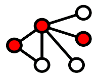

Hierarchical Navigable Small Worlds is a data structure made for indexing vectors. I implemented it in Rust with multithreading capabilities and plan on adding some additional features:
- Filtering capabilities based on attributes attached to vectors
- A vector database engine that works directly on disk, allowing for the fast creation and querying of vector databases that don't fit in RAM.
You can the code I am working on following this link.
